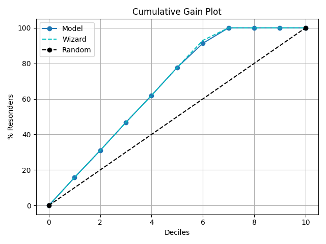

plot_cumulative_gain with examples#
An example showing the plot_cumulative_gain function
with a scikit-learn classifier (e.g., LogisticRegression) instance.
# Authors: The scikit-plots developers
# SPDX-License-Identifier: BSD-3-Clause
from sklearn.datasets import (
load_breast_cancer as data_2_classes,
# load_iris as data_3_classes,
)
from sklearn.linear_model import LogisticRegression
from sklearn.model_selection import train_test_split
import numpy as np
np.random.seed(0) # reproducibility
# importing pylab or pyplot
import matplotlib.pyplot as plt
# Import scikit-plot
import scikitplot.decile as sp
# Load the data
X, y = data_2_classes(return_X_y=True, as_frame=False)
X_train, X_val, y_train, y_val = train_test_split(X, y, test_size=0.5, random_state=0)
# Create an instance of the LogisticRegression
model = LogisticRegression(max_iter=int(1e5), random_state=0).fit(X_train, y_train)
# Perform predictions
y_val_prob = model.predict_proba(X_val)
# Plot!
ax = sp.kds.plot_cumulative_gain(
y_val,
y_val_prob,
save_fig=True,
save_fig_filename="",
# overwrite=True,
add_timestamp=True,
# verbose=True,
)

Total running time of the script: (0 minutes 2.068 seconds)
Related examples